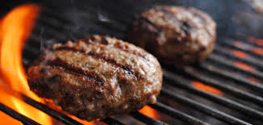
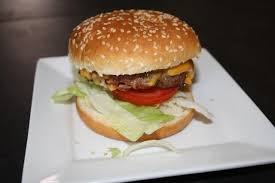
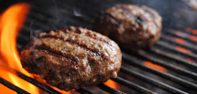
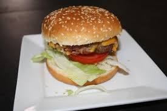

Snipper een halve ui en 3 augurken in een blender, houd de ingredienten apart. De saus is belangrijk en luistert heel nauw dus proef vaak.
Vervolgens meng je 2 eetlepels mayo met een halve eetlepel ketchup, 1 theelepel mosterd en ongeveer 1 eetlepel piccalilly samen.
Voeg daarna 1 afgestreken eetlepel ui en 1 gesnipperde augurk toe. Voeg een snufje zout toe en een anderhalve theelepel suiker.
Voeg tenslotte een paar druppels azijn toe. Meng alles goed en proef regelmatig.
Te zuur? meer suiker, piccalilly en ketchup.
Te zoet? iets meer azijn en/of zout, mayo en mosterd.
Probeer te voorkomen dat de saus naar mayo smaakt. Ik voeg meestal ook nog een klein beetje belgische mayo toe maar dat is niet noodzakelijk.
De piccalilly smaakt als het goed is al enigszins naar de echte saus.
Doe de saus in de koelkast en laat het rusten.
Ondertussen kan je de hamburger broodjes snijden zodat je ook een middendeel overhoud en dan kan je ook de sla pakken en het in korte reepjes snijden.
Snipper de rest van de ui (ditmaal iets minder fijn) en snijd een paar plakjes augurk.
Haal het vlees uit de vriezer en bak de burgers in voldoende olie aan beide kanten op hoog vuur gaar. Omdat ze zo dun zijn duurt dit hooguit 3 minuten.
Bestrooi met een heel klein beetje zout en (fijne)peper het vlees. Dep de burgers droog op wat keukenpapier (gebruik geen vette burgers).
Grill alle lagen van de broodjes aan 1 kant. 1 kant moet knapperig zijn en de andere kant nog zacht.
Smeer een dun laagje saus (op kamertemperatuur) op het bodem broodje.
Voeg een beetje gesnipperde ui toe, van beide niet teveel. Strooi wat sla reepjes erop, wederom niet al te veel.
Leg daaroverheen een plak cheddar en vervolgens de burger. Dan het midden broodje, dun laagje saus, wat ui en sla reepjes erover heen en dan de tweede burger.
Op de bovenste burger leg je 2-3 plakjes augurk, top broodje erop en klaar.